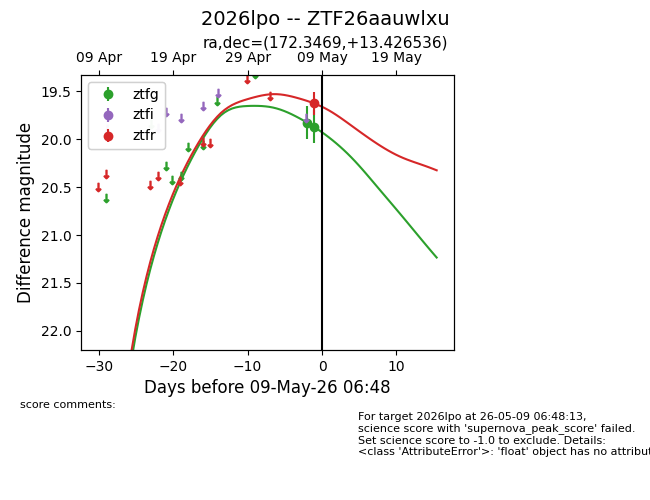
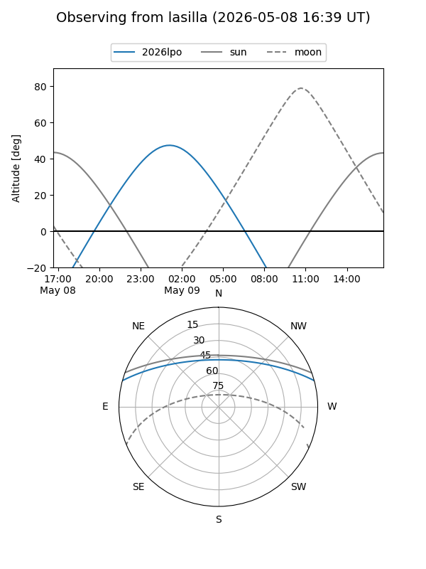
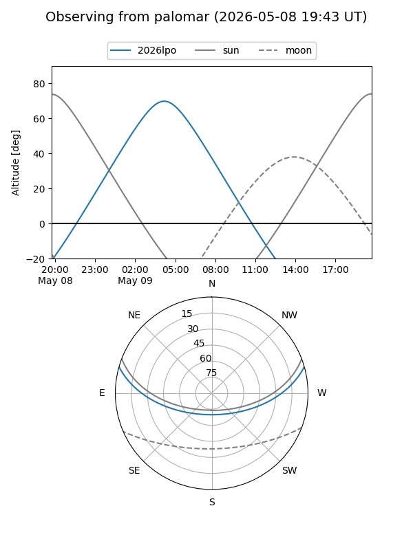
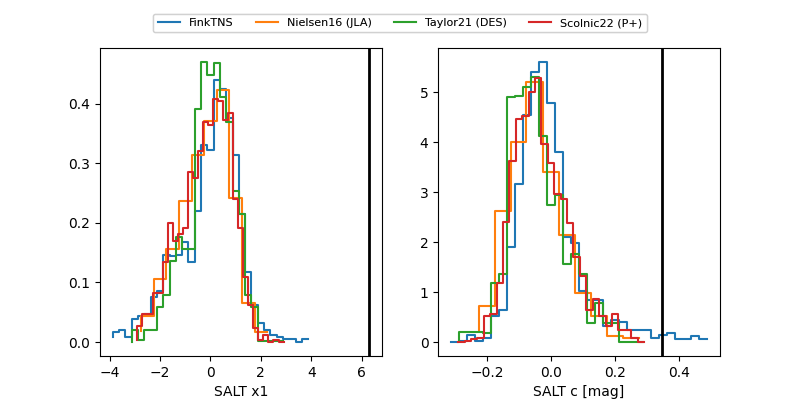

2026lpo
Target 2026lpo at 2026-05-09 06:49
Aliases and brokers:
FINK: link
Lasair: link
ALeRCE: link
TNS: link
YSE: link
alt names
ZTF26aauwlxu (ztf,fink_ztf)
2026lpo (tns,yse)
Coordinates:
equatorial (ra, dec) = 172.3469,+13.42654
equatorial (HMS+DMS) = 11:29:23.25,+13:25:35.53
galactic (l, b) = (244.4174,+66.44184)
Flags:
Photometry:
last ztfg=19.87, ztfr=19.62
2 ztfg, 1 ztfr detections
Lightcurve

Visibility


Additional plots
